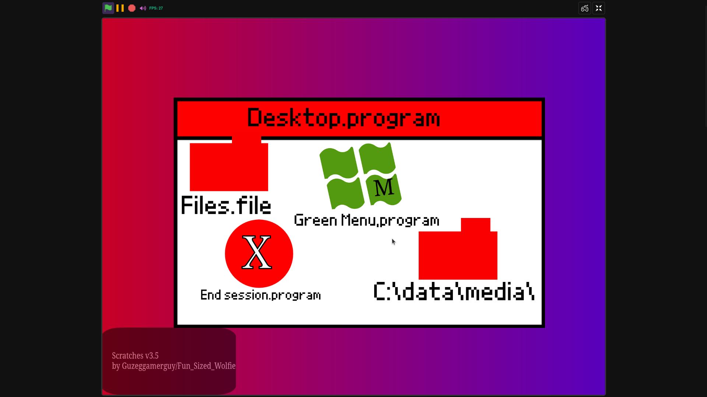
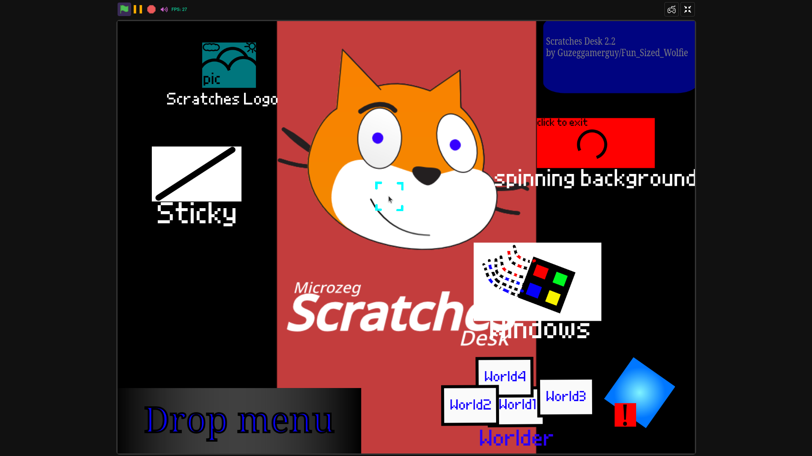
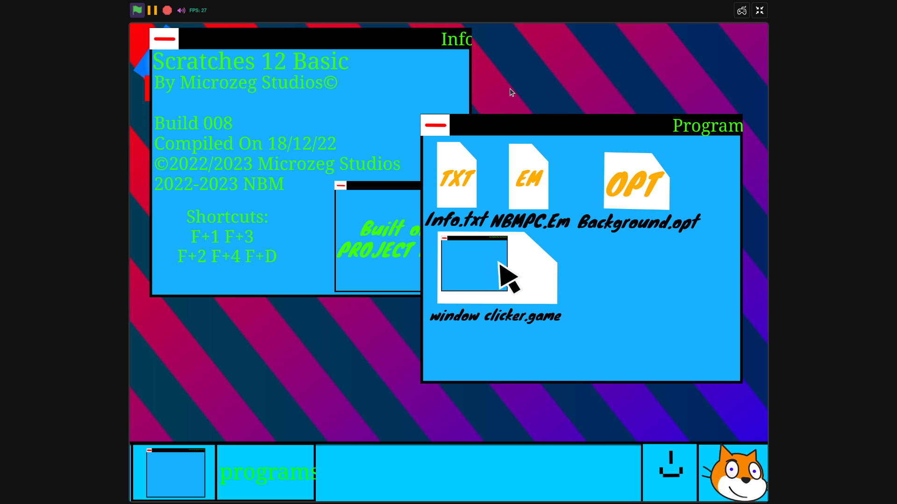
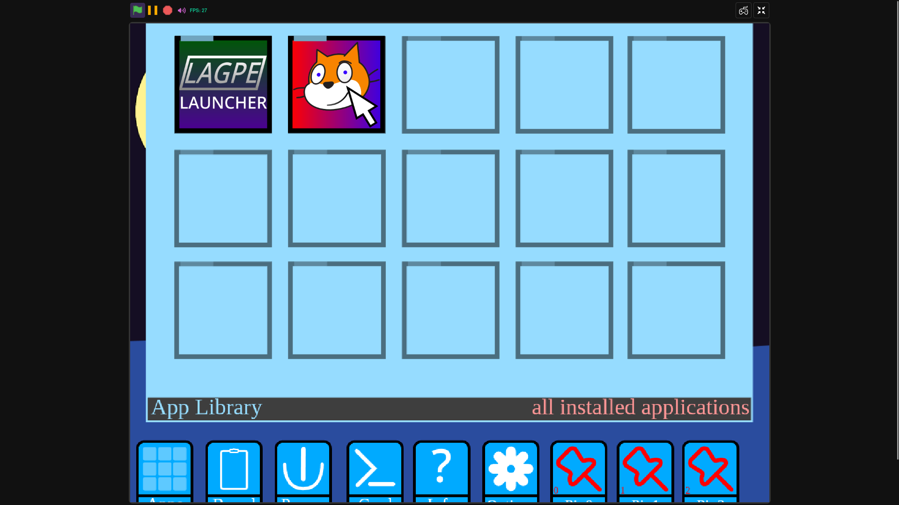

ABOUT SCRATCHES
Scratches is an operating system by Microzeg Studios, primarily developed by GUZEG on scratch.
The first version, v3.5, was released on March 18, 2022.
It was built on Fun Sized Foxy's Scratch OS for Scratchers Template.
In 2023, Scratches transitioned to the Project NeW! kernel.
This change was made as the 'classic' version was clunky.
Sadly, Project NeW! became it's own worst enemy with High Mountain, as it too became clunky.
The latest version, Scratches 17 Cantaloupe, is built on the newer Kernel17 kernel.
Screenshots Of Scratches Versions:



